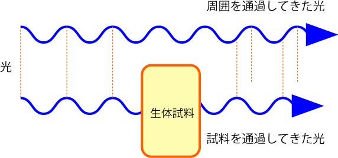
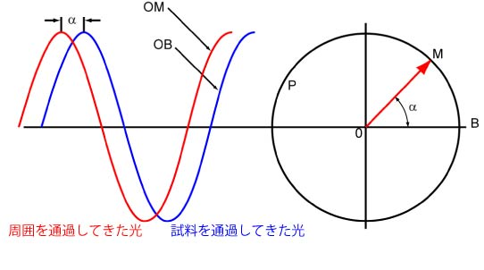

さて，前にも述べましたように，我々が光の変化として認識できるのは，
光の強度 ： 振幅
光の色 ： 波長
しかありません．
細胞などの生体試料はそのほとんどが水です．
水はご存じのように光をほとんど透過します．
もちろん，ある程度は吸収し，赤い光ほど吸収されやすくなります．
ですので，海中では赤い光はほとんど届かず，青の世界になってしますのです．
しかし，生体試料はほんの小さいものなので，光の吸収はほとんどありません．
ですので，
光の強度変化
はほとんどなく，さらに，
波長の変化
もありません．
つまり．．．．生体試料は顕微鏡観察においては，振幅，波長はほとんど変化がないのです．
言い換えると．．．．生体試料は透明なので，いくら拡大しても，見ることができない，と言うことになります．
しかし，若干ながら変わるものがあります，それは，
位相
なのです．
生体試料はほとんど透明であっても，中にはいろいろなものが入っていますので，
屈折率が周りの水より若干高い
のです，つまり，
光の進む速度が若干遅くなる
のです．
その結果，
生体試料通過後の光は周囲の光より若干位相が遅れる
のです．

これをベクトルで表すと次のようになります．

確かに，位相の変化がありました．．．．しかし．．
我々には位相の変化を認識できない
のです．．．
つまり，いくら位相情報が変化しても，その変化がわからないのです．．．
そこで，位相差顕微鏡，です．
位相差顕微鏡とは，
位相情報の変化を強度変化に変換する顕微鏡
と言えます．
強度変化に変換できれば，我々はその変化を認識できるのです．
では，どのようにして変換するのでしょうか？